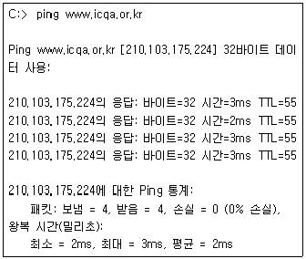
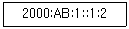
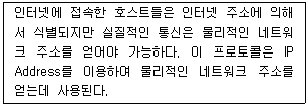
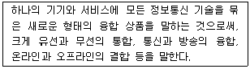
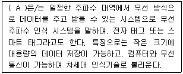
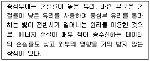
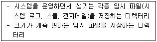
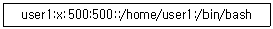
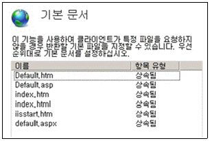
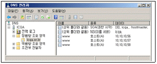

네트워크관리사-2급 (2019-05-19 기출문제)
1과목: TCP/IP
1. IPv6 헤더 형식에서 네트워크 내에서 데이터그램의 생존 기간과 관련되는 필드는?
- Version
- Priority
- Next Header
- Hop Limit
(정답률: 75%)

2. ICMPv6에서 IPv4의 ARP 역할 및 특정 호스트로의 전달 가능 여부 검사 기능을 하는 메시지는?
- 재지정 메시지(Redirection)
- 에코 요청 메시지(Echo request)
- 이웃 요청과 광고 메시지(Neighbor Solicitation and Advertisement)
- 목적지 도달 불가 메시지(Destination unreachable)
(정답률: 65%)
3. IPv4와 비교하였을 때, IPv6 주소체계의 특징으로 옳지 않은 것은?
- 64비트 주소체계
- 향상된 서비스품질 지원
- 보안기능의 강화
- 자동 주소설정 기능
(정답률: 89%)
4. TCP가 제공하는 기능으로 옳지 않은 것은?
- 종단 간 흐름 제어를 위해 동적 윈도우(Dynamic Sliding Window) 방식을 사용한다.
- 한 번에 많은 데이터의 전송에 유리하기 때문에 화상 통신과 같은 실시간 통신에 사용된다.
- 송수신되는 데이터의 에러를 제어함으로서 신뢰성 있는 데이터 전송을 보장한다.
- Three Way Handshaking 과정을 통해 데이터를 주고받는다.
(정답률: 80%)
5. 인터넷에서 멀티캐스트를 위하여 사용되는 프로토콜은?
- IGMP
- ICMP
- SMTP
- DNS
(정답률: 86%)
6. TCP 헤더 중에서 에러 제어를 위한 필드는?
- Offset
- Checksum
- Source Port
- Sequence Number
(정답률: 87%)
7. UDP 세션을 이용하여 네트워크를 관리하는데 사용되는 프로토콜은?
- CMIP
- SMTP
- SNMP
- TFTP
(정답률: 81%)
8. Ping에 대한 설명 중 옳지 않은 것은?
- TCP/IP 프로토콜을 사용하는 응용 프로그램이다.
- 원격 호스트까지의 패킷이 도달하는 왕복 시간을 측정할 수 있다.
- 원격 호스트에 네트워크 오류가 있을 경우, 이를 확인하고 오류를 정정해 준다.
- 원격 호스트와의 연결 상태를 진단할 수 있다.
(정답률: 89%)
9. C Class 네트워크에서 6개의 서브넷이 필요하다고 할 때 가장 적당한 서브넷 마스크는?
- 255.255.255.0
- 255.255.255.192
- 255.255.255.224
- 255.255.255.240
(정답률: 74%)
10. 서버 내 서비스들은 서로가 다른 문을 통하여 데이터를 주고받는데 이를 포트라고 한다. 서비스에 따른 기본 포트 번호로 옳지 않은 것은?
- FTP – 21
- Telnet - 23
- SMTP – 25
- WWW - 81
(정답률: 92%)
11. 다음 중 사설 IP주소로 옳지 않은 것은?
- 10.100.12.5
- 128.52.10.6
- 172.25.30.5
- 192.168.200.128
(정답률: 73%)
12. 다음 출력물에 대한 설명으로 옳지 않은 것은?

- ping 명령어를 이용하여 목적지(www.icqa.or.kr)와 정상적으로 통신되었음을 확인하였다.
- ping 명령어를 이용하여 요청하고 응답받은 데이터의 사이즈는 32바이트이다.
- ping 명령어를 이용하여 요청하고 응답받은 시간은 평균 2ms 이다.
- 패킷의 살아 있는 시간(TTL, Time to Live)은 55초이다.
(정답률: 83%)
13. 동적 라우팅 프로토콜 중에 링크 상태(Link State) 라우팅 프로토콜은 무엇인가?
- RIP (Routing Information Protocol)
- EIGRP (Enhanced Interior Gateway Routing Protocol)
- OSPF (Open Shortest Path First)
- BGP (Border Gateway Protocol)
(정답률: 71%)
14. 다음 지문에 표기된 IPv6 주소는 요약된 표현이다. 보기 중 요약되기 전 상태는?

- 2000:00AB:0001:0000:0001:0002
- 2000:00AB:0001:0000:0000:0000:0001:0002
- 2000:AB00:1000:0000:1000:2000
- 2000:AB00:1000:0000:0000:0000:1000:2000
(정답률: 83%)
15. TCP/IP 프로토콜 4 Layer 구조를 하위 계층부터 상위 계층으로 올바르게 나열한 것은?
- Network Interface - Internet - Transport - Application
- Application - Network Interface - Internet - Transport
- Transport - Application - Network Interface - Internet
- Internet - Transport - Application - Network Interface
(정답률: 83%)
16. 보기의 프로토콜 중에서 지문에 제시된 내용과 같은 일을 수행하는 프로토콜은?

- DHCP
- IP
- RIP
- ARP
(정답률: 86%)
17. DNS에 대한 설명으로 옳지 않은 것은?
- 도메인에 대하여 IP Address를 매핑한다.
- IP Address를 도메인 이름으로 변환하는 기능도 있다.
- IP Address를 효율적으로 관리하기 위한 서비스로 IP Address 및 Subnet Mask, Gateway Address를 자동으로 할당해 준다.
- 계층적 이름 구조를 갖는 분산형 데이터베이스로 구성되고 클라이언트·서버 모델을 사용한다.
(정답률: 74%)
2과목: 네트워크 일반
18. OSI 7 Layer에서 Data Link 계층의 기능으로 옳지 않은 것은?
- 전송 오류 제어기능
- Flow 제어기능
- Text의 압축, 암호기능
- Link의 관리기능
(정답률: 86%)
19. IEEE 802 프로토콜의 연결이 올바른 것은?
- IEEE 802.3 : 토큰 버스
- IEEE 802.4 : 토큰 링
- IEEE 802.11 : 무선 LAN
- IEEE 802.5 : CSMA/CD
(정답률: 84%)
20. 프로토콜의 기본적인 기능 중, 정보의 신뢰성을 부여하는 것으로, 데이터를 전송한 개체가 보낸 PDU(Protocol Data Unit)에 대한 애크널러지먼트(ACK)를 특정시간 동안 받지 못하면 재전송하는 기능은?
- Flow Control
- Error Control
- Sequence Control
- Connection Control
(정답률: 72%)
21. TCP/IP 프로토콜 계층 구조에서 전송 계층의 데이터 단위는?
- Segment
- Frame
- Datagram
- User Data
(정답률: 80%)
22. 소프트웨어 정의 네트워크(SDN:Software Defined Networking)에 대한 설명으로 옳지 않은 것은?
- 정체를 일으키는 복잡한 구조 기술
- 가상화 기술의 발달에 대응하기 위한 기술
- 트래픽 패턴의 변화에 따른 대응 기술
- 네트워크 관리의 문제를 해결하기 위한 기술
(정답률: 80%)
23. 다음에서 설명하는 것은 무엇을 의미하는가?

- 디지타이징(Digitizing)
- 디지털 컨버전스(Digital Convergence)
- 클라우드 컴퓨팅(Cloud Computing)
- 유비쿼터스 컴퓨팅(Ubiquitous Computing)
(정답률: 60%)
24. 펄스 부호 변조(PCM)의 3단계 과정을 순서대로 올바르게 나열한 것은?
- 부호화 → 양자화 → 표본화
- 양자화 → 표본화 → 부호화
- 부호화 → 표본화 → 양자화
- 표본화 → 양자화 → 부호화
(정답률: 84%)
25. CSMA/CD에 기반한 네트워킹 기술은?
- Token Ring
- FDDI
- Ethernet
- Token Bus
(정답률: 77%)
26. 다음 (A) 안에 들어가는 용어 중 옳은 것은?

- Bar Code
- Bluetooth
- RFID
- WiFi
(정답률: 80%)
27. 다음에서 설명하는 전송매체는?

- Coaxial Cable
- Twisted Pair
- Thin Cable
- Optical Fiber
(정답률: 92%)
3과목: NOS
28. Windows Server 2008 R2에 설치된 DNS에서 지원하는 레코드 형식 중 실제 도메인 이름과 연결되는 가상 도메인 이름의 레코드 형식은?
- CNAME
- MX
- A
- PTR
(정답률: 81%)
29. Windows Server 2008 R2에서 FTP 사이트 구성시 옳지 않은 것은?
- IIS 관리자를 통해 웹 사이트에 FTP 기능을 추가할 수 있다.
- 특정 사용자별로 읽기와 쓰기 권한 조절이 가능해 익명사용자도 쓰기가 가능하다.
- 폴더에 NTFS 쓰기 권한이 없더라도 FTP 쓰기 권한이 있으면 쓰기가 가능하다.
- 특정 IP주소나 서브넷에서의 접속을 허용하거나 막을 수 있다.
(정답률: 78%)
30. Linux 시스템에서 특정 파일의 권한이 ′-rwxr-x--x′ 이다. 이 파일에 대한 설명 중 옳지 않은 것은?
- 소유자는 읽기 권한, 쓰기 권한, 실행 권한을 갖는다.
- 소유자와 같은 그룹을 제외한 다른 모든 사용자는 실행 권한만을 갖는다.
- 이 파일의 모드는 ′751′ 이다.
- 동일한 그룹에 속한 사용자는 실행 권한만을 갖는다.
(정답률: 76%)
31. Linux에서 사용자가 현재 작업 중인 디렉터리의 경로를 절대경로 방식으로 보여주는 명령어는?
- cd
- man
- pwd
- cron
(정답률: 78%)
32. Active Directory 도메인 내에서 사용되는 주요 인증 메커니즘으로 사용자와 네트워크 서비스의 신분을 검증하기 위해 티켓을 사용하는 정책은?
- PKI
- X.509
- Kerberos
- Secure Socket Layer
(정답률: 71%)
33. Linux 명령어 중 특정한 파일을 찾고자 할 때 사용하는 명령어는?
- mv
- cp
- find
- file
(정답률: 89%)
34. Windows Server 2008 R2에서 사용하는 PowerShell에 대한 설명으로 옳지 않은 것은?
- 기존 DOS 명령은 사용할 수 없다.
- 스크립트는 콘솔에서 대화형으로 사용될 수 있다.
- 스크립트는 텍스트로 구성된다.
- 대소문자를 구분하지 않는다.
(정답률: 71%)
35. Windows Server 2008 R2에서 관리자(Administrator)계정의 특징과 거리가 먼 것은?
- 시스템 환경설정, 사용자계정의 추가 삭제가 가능하다.
- 이름변경은 가능하나 삭제는 안된다.
- 관리자(Administrator) 그룹에 속해 있다.
- 일반적으로 암호의 길이 및 특수문자 등을 저장할 수 없다.
(정답률: 71%)
36. Linux 프로세스를 확인하는 명령어로 올바른 것은?
- ps –ef
- ls -ali
- ngrep
- cat
(정답률: 85%)
37. 다음의 내용이 설명하고 있는 Linux 시스템 디렉터리는 무엇인가?

- /home
- /usr
- /var
- /tmp
(정답률: 66%)
38. 다음은 Linux 시스템의 계정정보가 담긴 ′/etc/passwd′ 의 내용이다. 다음의 설명 중 옳지 않은 것은?

- 사용자 계정의 ID는 ′user1′ 이다.
- 패스워드는 ′x′ 이다.
- 사용자의 UID와 GID는 500번이다.
- 사용자의 기본 Shell은 ′/bin/bash′이다.
(정답률: 86%)
39. Windows Server 2008 R2 DHCP 서버의 주요 역할의 설명으로 맞는 것은?
- 동적 콘텐츠의 HTTP 압축을 구성하는 인프라를 제공한다.
- TCP/IP 네트워크에 대한 이름을 확인한다.
- IP 자원의 효율적인 관리 및 IP 자동 할당한다.
- 사설 IP주소를 공인 IP 주소로 변환해 준다.
(정답률: 76%)
40. 다음 그림은 Windows Server 2008 R2에서 IIS의 기본문서 화면이다. 현재 접속할 페이지에 ′default.aspx′, ′iisstart.htm′, ′index.html′, ′index.htm′ 파일이 있다면 접속하였을 때 어떤 파일을 불러오는가?

- Default.aspx
- iisstart.htm
- index.html
- index.htm
(정답률: 60%)
41. Linux 시스템에서 데몬(Daemon)에 관한 설명 중 옳지 않은 것은?
- 백그라운드(Background)로 실행된다.
- ′ps afx′ 명령어를 실행시켜보면 데몬 프로그램의 활동을 확인할 수 있다.
- 시스템 서비스를 지원하는 프로세스이다.
- 시스템 부팅 때만 시작될 수 있다.
(정답률: 85%)
42. Windows Server 2008 R2에서 Hyper-V 관리 콘솔의 ′가상 컴퓨터 마법사′를 통해 가상 컴퓨터를 만들 때 설정하는 목록으로 옳지 않은 것은?
- 장애 조치 클러스터 지원
- 메모리 할당
- 가상 하드 디스크 연결
- 이름 및 위치 지정
(정답률: 74%)
43. 다음 그림은 Windows 2008 Server R2의 DNS 관리자의 모습이다. 현재 www라는 동일한 이름으로 3개의 레코드가 등록되어 클라이언트가 도메인을 제공하면 IP주소를 번갈아가며 제공한다. 이처럼 IP 요청을 분산하여 서버 부하를 줄이는 방식을 무엇이라고 하는가?

- 라운드 로빈(Round Robin) 방식
- 큐(Queue) 방식
- 스택(Stack) 방식
- FIFO(First In First Out) 방식
(정답률: 82%)
44. Linux 시스템에 좀비 프로세스가 많이 생겨 시스템을 재부팅하려고 한다. 현재 Linux 시스템에 접속해 있는 사용자에게 메시지를 전달하고, 5분 후에 시스템을 재부팅시키는 명령어는?
- shutdown -r now 'Warning! After 5 minutes will be system shutdown!!'
- shutdown now 'Warning! After 5 minutes will be system shutdown!!'
- shutdown -r +5 'Warning! After 5 minutes will be system shutdown!!'
- shutdown +5 'Warning! After 5 minutes will be system shutdown!!'
(정답률: 88%)
45. Windows Server 2008 R2 서버에서 ′[관리도구] -＞ [이벤트 뷰어] -＞ [Windows 로그]′의 세부항목이 아닌 것은?
- 응용 프로그램
- 보안
- 시스템
- 경고
(정답률: 62%)
4과목: 네트워크 운용기기
46. OSI 7계층 중에서 리피터(Repeater)가 지원하는 계층은?
- 물리 계층
- 네트워크 계층
- 전송 계층
- 응용 계층
(정답률: 83%)
47. RAID의 구성에서 미러링모드 구성이라고도 하며 디스크에 있는 모든 데이터는 동시에 다른 디스크에도 백업되어 하나의 디스크가 손상되어도 다른 디스크의 데이터를 사용할 수 있게 한 RAID 구성은?
- RAID 0
- RAID 1
- RAID 2
- RAID 3
(정답률: 82%)
48. 다음 중 Hub의 종류와 설명이 올바로 연결된 것은?
- Dummy Hub – 가격이 비싸고 기능이 많은 지능형 허브이다.
- Passive Hub – Active Hub 보다 먼 거리를 연결할 수 있다.
- Intelligent Hub – 망 관리 기능 등의 부가적인 기능이 있다.
- Active Hub - 전원 공급 장치가 따로 없어서 신호재생이나 증폭이 불가능하다.
(정답률: 69%)
49. 네트워크 장비인 라우터에 대한 설명 중 옳지 않은 것은?
- TCP/IP의 트래픽 경로제어를 한다.
- 네트워크를 분리하는데 사용할 수 있다.
- 트래픽상의 모든 신호의 재생과 유효거리를 확장한다.
- OSI 7 Layer에서 네트워크 계층의 서비스를 한다.
(정답률: 69%)
50. NIC(Network Interface Card)와 관련한 다음 설명 중 올바른 것은?
- 네트워크 내에서 NIC는 유일한 MAC 주소를 가지고 있다.
- 일반적으로 컴퓨터의 NIC를 교체하는 경우에 이전에 사용하던 MAC 주소를 할당해야 한다.
- Ethernet의 경우 MAC 주소는 4Byte로 구성된다.
- NIC는 OSI 참조모델에서 3계층에 해당한다.
(정답률: 56%)